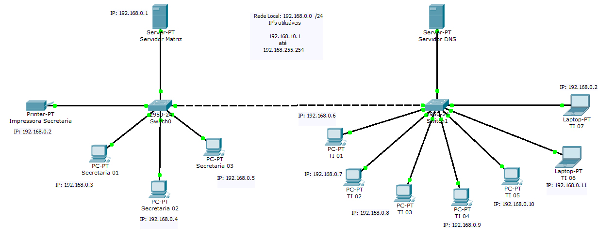

MARCELO MARRA

FUNDAMENTOS DE REDES DE COMPUTADORES
MARISSOL MARTINS
REDES DE COMPUTADORES

A TI Verde é a forma de desenvolver e promover a sustentabilidade encontrada pelas empresas envolvidas com tecnologia da informação. A sustentabilidade vem sendo discutida por vários setores da sociedade e ganhou força desde o início dos anos 2000. Hoje as empresas ligadas ao TI começam a trabalhar questões relacionadas ao TI Verde.
Nosso trabalho envolve redes de computadores de uma empresa, introduzindo a questão de TI Verde. São 3 computadores na secretaria para a demanda de clientes que a empresa possui e 7 computadores na TI, que é onde serão processados os dados dos clientes, tais como banco de dados, manipulações de valores virtuais, entre outros. Utilizamos apenas 1 impressora, para reduzir o gasto de papel impresso, sendo que qualquer comunicado é feito via rede interna da empresa. Conseguimos, no mês passado, reduzir em 15% o gasto de papel e, em consequencia disso, conseguimos reduzir 13% a energia gasta por mês com impressões e manutenção da própria empresa. Conseguiremos assim, contribuir para um Páis sustentável, reduzindo os gastos e tornando-nos mais umas das empresas com TI Verde.
Nosso trabalho envolve redes de computadores de uma empresa, introduzindo a questão de TI Verde. São 3 computadores na secretaria para a demanda de clientes que a empresa possui e 7 computadores na TI, que é onde serão processados os dados dos clientes, tais como banco de dados, manipulações de valores virtuais, entre outros. Utilizamos apenas 1 impressora, para reduzir o gasto de papel impresso, sendo que qualquer comunicado é feito via rede interna da empresa. Conseguimos, no mês passado, reduzir em 15% o gasto de papel e, em consequencia disso, conseguimos reduzir 13% a energia gasta por mês com impressões e manutenção da própria empresa. Conseguiremos assim, contribuir para um Páis sustentável, reduzindo os gastos e tornando-nos mais umas das empresas com TI Verde.
Todos direitos são reservados - Marcelo Marra -